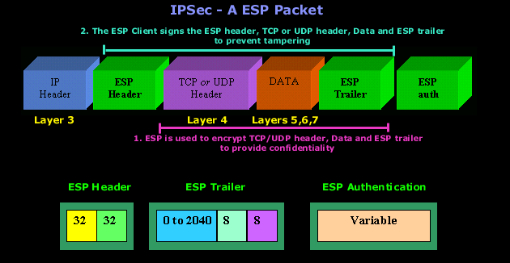

VPN - IPsec tunneling
Autori: Dominik Lackovic i Davorin Horvat
Sadržaj |
Uvod
Osnovna ideja Interneta je slobodna i transparentna komunikacija na globalnoj razini, što ga kao takvoga, u današnje vrijeme, čini neupotrebljivime komunikacijskim sredstvom za poslovne svrhe. Kako bi se omogućila sigurna komunikacija putem Interneta i ponudila sigurna komunikacija korištenjem postojeće infrastrukture. Takav način komunikacije omogućuje zaposlenicima tvrtke pristup internim poslužiteljima sa bilo koje lokacije sa pristupom internetu.
--Dhorvat3 09:09, 19. siječnja 2017. (CET)
VPN
VPN (virtual private network) je privatna mreža koja koristi javne mreže kako bi povezala udaljene poslužitelje ili klijente. Najčešće VPN kreira virtualnu mrežu izmežu tvrtkine privatne mreže i udaljenog korisnika kroz infrastrukturu interneta. Dva najčešća tipa VPN-a su:
- Remote-Access: Omogućuje korisnicima pristup privatnoj mreži poduzeća sigurnom vezom putem interneta,
- Site-to-site: Povezuje odvojene lokalne privatne mreže tvrtke u istu privatnu mrežu preko interneta. Prepoznajemo dvije vrste site-to-site mreža intranet(povezivanje privatnih mreža istog poduzeća) i extranet(povezivanje privatnih mreža poduzeća partnera)
Svaki dobro implementiran VPN omogućava: sigrunost, pouzdanost, skalabilnost, upravljanje mrežom i upravljanje politikama mreže. Da bi osigurao zahtjeve VNP-u su potrebne metode za osiguravanje sigurne veze i podataka. Povjerljivost podataka VPN omogućava korištenjem protokola koji omogućuju enkripciju kao što su Ipsec, PPTP/MPPE i L2TP/Ipsec. Kako bi se onomogućili napadi na privatnu mrežu VNP mora u sebi imati ugrađene mehanizme za spriječavanje najčeših oblika napada na sigurnost podataka i veze. Protokoli moraju osigurati integritet podataka, anonimnost, neporecivost podataka i obranu na napade treće strane reporodukcijom i ponovnim slanjem paketa.
--Dhorvat3 09:09, 19. siječnja 2017. (CET)
IPsec
IPsec je skup protokola za sigurnu komunikaciju korištenjem IP protokola. Sigurnu komunikaciju javnom mrežom omogućava autentikacijom i enkripcijom svakog IP paketa. Za razliku od ostalih protokola za sigurnu komunikaciju preko interneta, IPsec štiti sav promet preko IP mreže. IPsec koristi tri protokola:
- Security Associations – skup algoritama i parametara kojima se kriptiraju i autenticiraju tokovi podataka. Omogućeno je protokolom Internet Security Association and Key Protocol (ISAKMP)
- Encapsulating Security Payloads – pruža autentičnost, integritet i povjerljivost zaštićenih paketa. Koristi se za enkripciju cijelog sadržaja IPsec paketa. ESP dodaje tri dodatne komponente paketu: ESP header, ESP trailer i ESP authentication block. 
{kind=link}
Slika 1. ESP, dostupno na http://www.firewall.cx/networking-topics/protocols/127-ip-security-protocol.html
- Authentication Headers – dodatno zaglavlje koje postavlja pošiljatelj, a služi kao zaštita od mijenjanja podatka. Pruža zaštitu od napada: ponovnim slanjem paketa, mijenjanjem podataka i lažnim predstavljanjem. Algoritmi koji se koriste su: Message Authentication Codes(MAC) zasnovan na DES-u ili neku od jednosmjernih funkcija (MD5 ili SHA-1).
{kind=link}
Slika 2. AH, dostupno na http://www.firewall.cx/networking-topics/protocols/127-ip-security-protocol.html
--Dhorvat3 09:09, 19. siječnja 2017. (CET)
IPsec tunnel
IPsec ima dva načina rada tunnel i transport. Tunnel mod je predefinirani način rada koji štiti cijeli Ipsec paket, dok transport mod štiti samo sadržaj paketa (ne i IP header, adresu izvora i odredišta). Tunnel mod se najčešće koristi za zaštitu veze između krajnjih točaka privatnih mreža. IPsec u tunnel načinu rada zapakira originalni paker, enkriptira ga, doda mu novo IP zaglavlje i šalje ga na drugu stranu VPN veze.
{kind=link}
Slika 3. IPsec tunnel, dostupno na: http://www.firewall.cx/networking-topics/protocols/870-ipsec-modes.html
{kind=link}
Slika 4. IPsec tunnel paket, dostupno na: http://www.firewall.cx/networking-topics/protocols/870-ipsec-modes.html
--Dhorvat3 09:10, 19. siječnja 2017. (CET)
Implementacija
Implementirati ćemo VPN uslugu pomoću IPsec protokola u tunnel načinu rada. Realiziriati ćemo host-to-host varijantu protokola između dva Kali Linux računala instalirana u virtualnom stroju na Windows 10 operacijskom sustavu. Oba računala spojena su na istu lokalnu bežičnu mrežu.
Podaci o računalima:
Računalo #1
Host: dominik
IP address: 192.168.1.9
Računalo #2
Host: davorin
IP address: 192.168.1.10
Koristiti ćemo Linux alat strongSwan. Druge opcije su bile Openswan i njegov fork Libreswan, ali nakon nekoliko sati pokušavanja implementacije nismo uspjeli. Neki od mogućih razloga je taj što je Kali Linux baziran na Debianu te što su Openswan/Libreswan ciljani za Red Hat distribucije. Instalacija i rad sa strongSwan-om je vrlo jednostavan i brz.
Instalacija paketa
Instalirati strongSwan je moguće ručno preuzimanjem paketa s interneta te pokretanjem instalacije. Brži i jednostavniji način je korištenjem Linux terminala sljedećom naredbom:
apt-get install ipsec-tools strongswan-starter
Nakon instalacije, potrebno je izmijeniti IPsec konfiguracijsku datoteku ipsec.conf na način da se upišu željeni atributi poput naziva konekcije, IP adresa računala, vrste autentikacije, načina rada i razih drugih. Ovo konfiguriranje je jako jednostavno pa je isto za ova računala. Samo je potrebno to obaviti na oba računala. Kod složenijih konfiguriranja radi se odvojeno i konfiguracijske datoteke su nešto različite. Naša konekcija se zove IPsec_tunnel i biramo tunnel način rada.
{kind=link}
Zatim, potrebno je dogovoriti se o sigurnosnom ključu za autentikaciju. Treba izmijeniti konciguracijski datoteku ipsec.secrets na isti način kao i prethodnu. Sadrži i IP adrese u čijoj će se komunikaciji koristiti taj ključ.
{kind=link}
Konfiguracija se završava ponovnim pokretanjem alata ipsec naredbom
ipsec restart
Testiranje
Želimo se uvjeriti da je veza uspostavljena i da radi. Za to se koristi poznata naredba ping na jednom od računala.
{kind=link}
Za to vrijeme, drugo računalo može osluškivati kanal naredbom
watch ipsec statusall
{kind=link}
Na prethodnoj se slici može vidjeti da je uspostavljena veza između dvaju IP adresa (vanjska 192.168.1.9 i lokalna 192.168.1.10), koristi se pre-shared key za autentikaciju, prepoznata je veza pod nazivom IPsec_tunnel u tunnel načinu rada.
Literatura
[1] http://documentation.netgear.com/reference/enu/vpn/VPNBasics-3-01.html Preuzeto 13.1.2017.
[2] https://www.gypthecat.com/ipsec-vpn-host-to-host-on-ubuntu-14-04-with-strongswan Preuzeto 14.1.2017.
[3] http://xmodulo.com/create-site-to-site-ipsec-vpn-tunnel-openswan-linux.html Preuzeto 14.1.2017.
[4] http://www.firewall.cx/networking-topics/protocols/870-ipsec-modes.html Preuzeto 16.1.2017.
[5] http://www.firewall.cx/networking-topics/protocols/127-ip-security-protocol.html Preuzeto 16.1.2017.
[6] http://www.cisco.com/c/en/us/support/docs/security-vpn/ipsec-negotiation-ike-protocols/14106-how-vpn-works.html Preuzeti 16.1.2017.